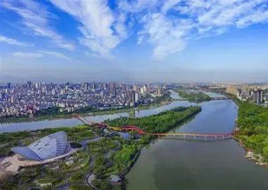
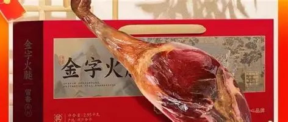
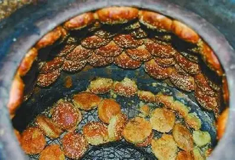
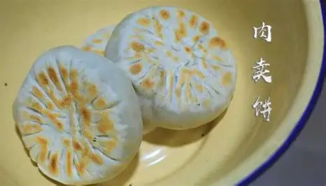
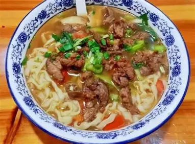

金华位于浙江省中部，是一座拥有两千多年历史的文化名城。这里山清水秀，人杰地灵，自古就有"小邹鲁"的美称。金华是婺州文化的发源地，也是著名的历史文化名城和旅游胜地。

金华是座小城，但有无数美食让在异乡的游子们魂牵梦绕。




金华境内名胜古迹众多，自然风光与人文景观交相辉映。其中最为人熟知的当属双龙洞，被誉为"天下第一洞"；义乌国际商贸城是世界最大的小商品集散中心，东阳横店影视城则是中国最大的影视拍摄基地之一。
金华自古英才辈出，孕育了无数文人墨客。唐代诗人骆宾王、南宋史学家吕祖谦、元代名医朱丹溪、现代诗人艾青、作曲家施光南等，都是金华这片土地上走出的杰出代表。
如果你想深入了解金华或者想来金华旅游，欢迎点击以下链接~